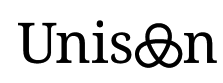

Unison
I am leading the development of Unison. Unison is a simple, flexible, and potentially optimal tool that performs integrated register allocation and instruction scheduling using constraint programming as a modern method for combinatorial optimization.
Unison is a collaboration between KTH, RISE SICS, and Ericsson. Its design and development has been partially funded by KTH, Ericsson AB, and the Swedish Research Council (VR 621-2011-6229). Please check out a post on Ericsson's research blog about Unison.
Gecode

I am the main designer and developer of Gecode. Gecode is an open, free, portable, accessible, and efficient environment for developing constraint-based systems and applications in research, industry, and education.
Particularly important for its design is simplicity and accessibility. Simplicity is the key reason why Gecode is efficient and successfully exploits today's commodity parallel hardware. Accessibility is due to its complete reference documentation, complete tutorial documentation, and academic publications in conferences and journals presenting key design decisions and techniques.
Gecode is widely used (several thousand users): as a research vehicle; for teaching constraint programming at several universities around the world; as an application platform by companies; it is included in distributions such as Debian, Ubuntu, OpenSUSE, Gentoo, and FreeBSD (and possibly others).
For technical questions about Gecode, please do not ask me directly but use the mailing list: it is better to build a comprehensive archive of questions and answers related to Gecode that can be useful for everyone. If you have any questions not suitable for the public mailing list, please do not hesitate to contact me directly.
Mozart
I am a main designer, am the main developer, and have been leading the distributed development of Mozart, a programming platform for constraint and distributed programming, from 1997 to 2001.
My contributions to Mozart in particular include the design and implementation of constraint services, which is documented in the book Programming Constraint Services.
I am not any longer involved in Mozart, so please direct any questions to the Mozart mailing lists.